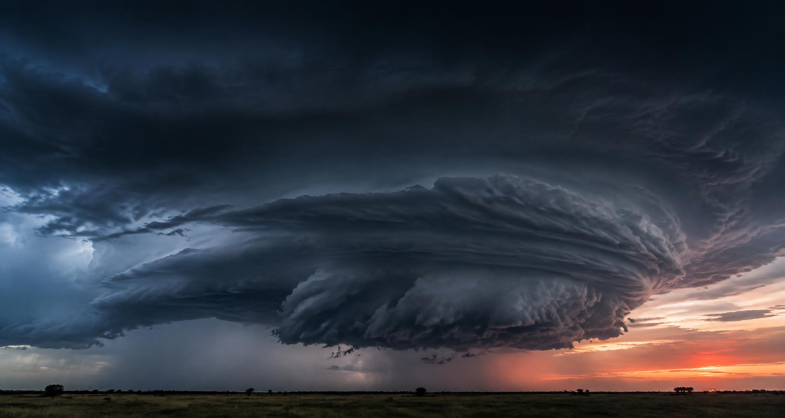
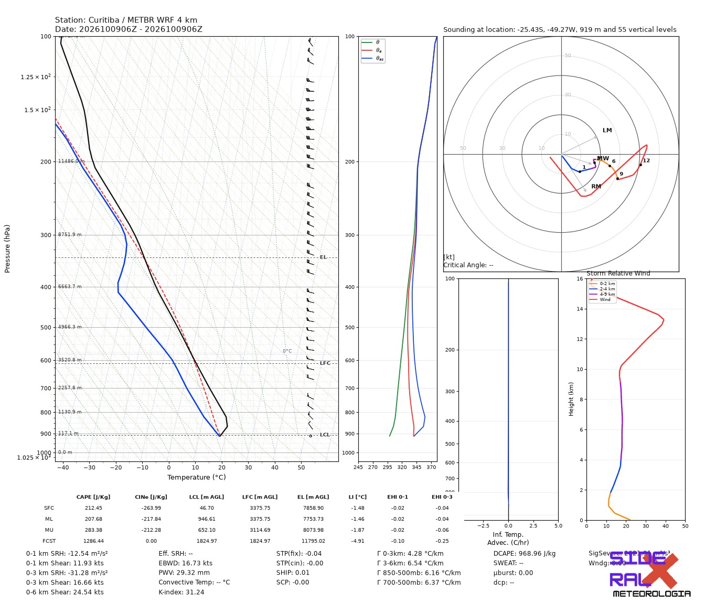
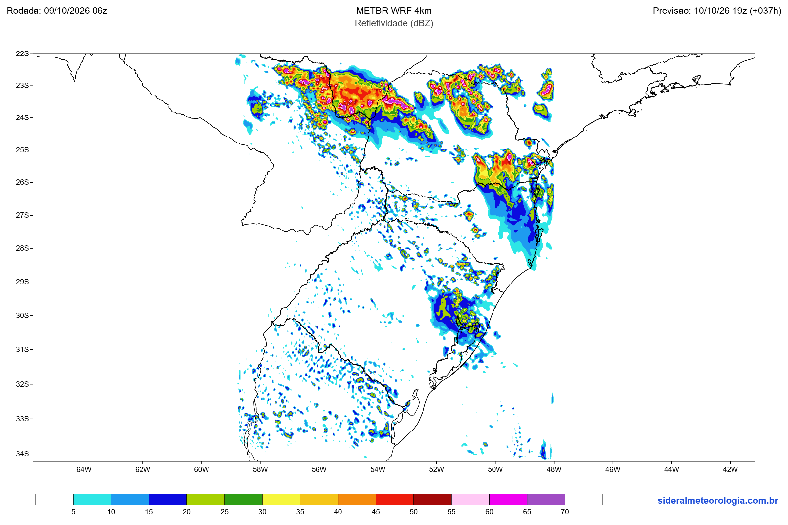

01
Modelos numéricos WRF
Do cenário regional aos detalhes da atmosfera. Diferentes domínios para ampliar a sua análise.
- ›> WRF METBR 4 KM
- ›› CIM WRF 8 KM
- ›› WRF SIDERAL 7 KM
- ›› WRF TARC 3 KM

O único site com modelos WRF gratuitos e de alta resolução a média resolução.
Do cenário regional aos detalhes da atmosfera. Diferentes domínios para ampliar a sua análise.
O que acontece acima da superfície importa. Perfis verticais para compreender o potencial atmosférico.
Estrutura, intensidade e evolução da chuva. Mais contexto para acompanhar sistemas convectivos.
Uma perspectiva ampla sobre a nebulosidade e a organização dos sistemas meteorológicos.
Compare perspectivas. Reconheça padrões. Construa uma análise com mais consistência.
Sistemas fáceis de usar para previsão simplificada e estações.
Da superfície ao topo. Temperatura, umidade e energia
em uma leitura completa da atmosfera.

Modelos globais e regionais se complementam para revelar o cenário meteorológico.
Da circulação de grande escala à organização da convecção. Diferentes resoluções para investigar os fenômenos que importam.

Passe o mouse sobre a imagem para ler o valor em dBZ.
Nenhum ponto em leitura.
Conectamos meteorologia e tecnologia para ampliar o acesso à análise da atmosfera. Contra a desinformação, ciência. Para cada decisão, mais contexto.
Conhecer a plataforma